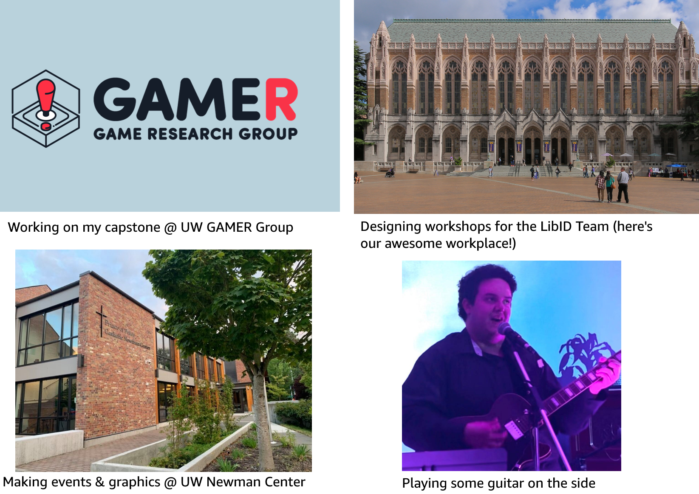
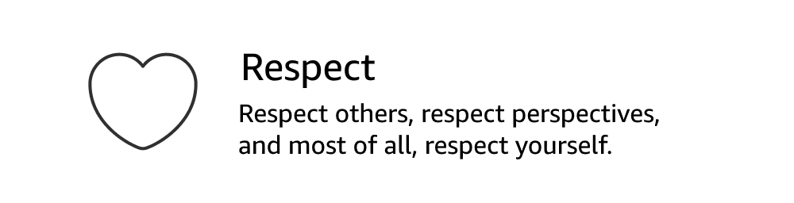
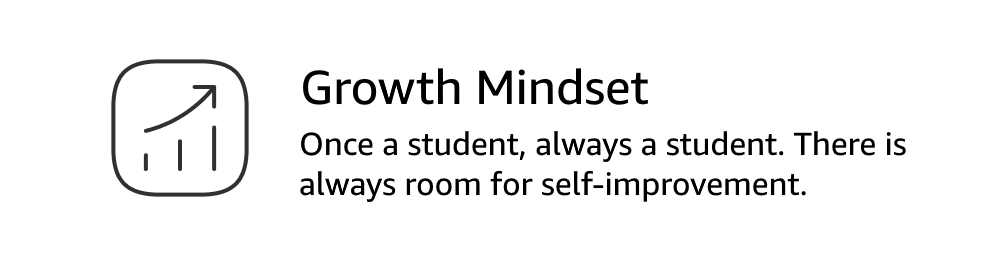
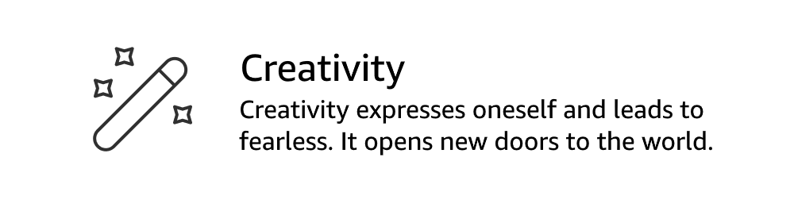

Chapters:
Hello there, I'm sure you've read my name already! I'm currently a graduate student pursuing my Master of Library and Information Science (MLIS) from the University of Washington.
I am an Instructional Designer who thrives in fast-paced, collaborative teams, using my skills in digital storytelling, education, and outreach to deliver engaging educational programs. My work experience includes academic libraries, academic advising, and orientation/transition support, all in the higher education field.
Click this magical link to learn even more about me!
I grew up in the early 2000s, loving art, storytelling, and technology. I would spend hours as a kid drawing cartoons and writing comics, reading fantasy books, and playing video games. In high school, after developing skills in graphic design and media production, I started thinking about ways that I could create media to positively impact others.
I brought these interests to two majors in English and communication studies once I came to college, and found that I particularly enjoyed the writing and teaching aspects in my majors. And this led me to ID, where I continued to fulfill my interest in improving something through creativity and telling stories while solving problems.
In my final year of graduate school, I am working on a capstone project with the UW iSchool's Game Research (GAMER) Group, sponsored by Drs. Jin Ha Lee and Jason Yip. I'll be designing educational games to teach about misinformation, an evolution of my Baloney Detectives project from earlier in the program.
I am also developing a workshop by myself on the Text Encoding Initiative (TEI) publishing platform for my work with the UW Libraries. We have several other workshops in progress too!
Additionally, as a member of the Student Leadership Team at the UW Newman Center, the campus Catholic church. I help brainstorm and lead events for our church community and design promotional graphics.
On top of all this, I'm also playing music, mostly on my YouTube channel.



